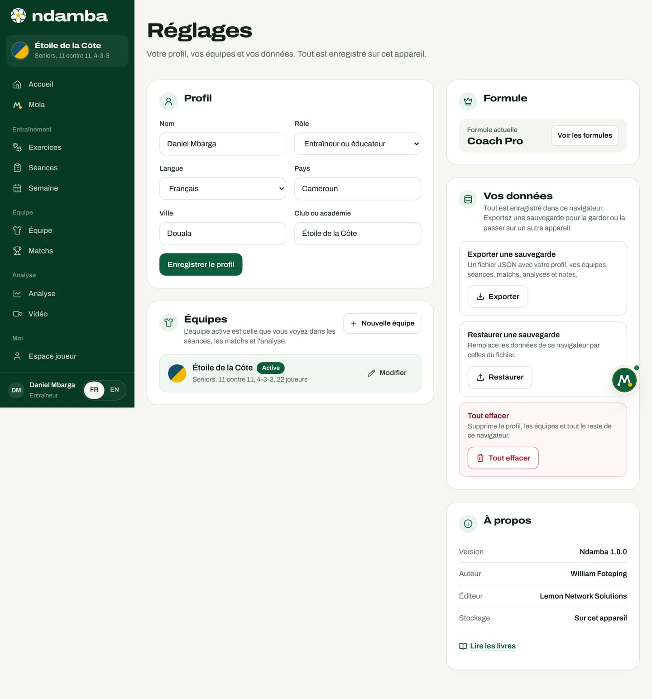

Confiance, données et jeunes joueurs
Où vivent vos données, comment les sauvegarder et les restaurer, pourquoi il n’y a pas encore de comptes, la règle « Rien ne part sans vous », ce que le modèle d’IA reçoit exactement, la place des enfants et des parents, les règles de la maison et ce qui changera avec les comptes.
11 min de lecture
Un outil de football pour les jeunes touche à des choses précieuses : le nom d’un enfant, son année de naissance, ce que son entraîneur pense de lui, sa forme du jour. Un club ou une fédération y confie aussi sa façon de jouer. La confiance ne se décrète pas, elle se vérifie. Ce chapitre dit exactement où vont les données, ce qui sort de l’appareil et quand, et ce que Ndamba refuse de faire. Tout ce qui suit décrit l’application d’aujourd’hui ; ce qui changera avec les comptes est signalé à la fin.
Où vivent vos données
Ndamba est une application « locale d’abord ». Tout ce que vous créez est enregistré dans le navigateur de l’appareil que vous utilisez, dans une base que le navigateur réserve au site (elle s’appelle IndexedDB). Il n’existe pas de serveur de données Ndamba. Les Réglages le disent dès leur première ligne : « Tout est enregistré sur cet appareil. » Dès la conversation d’accueil, la fiche du profil le rappelle : « Tout reste dans ce navigateur. »
| Ce qui est enregistré | Ce que cela contient |
|---|---|
| Le profil | Nom, rôle, langue, pays, ville, club, catégorie, poste, objectifs, formule |
| L’effectif | Pour chaque joueur : nom, numéro, poste, année de naissance, pied fort, niveaux de compétence, notes |
| L’entraînement | Les séances, leurs blocs et leurs exercices |
| Les matchs | La fiche, la composition, le plan de jeu, les tags codés en direct ou en vidéo |
| Le parcours | Évaluations, observations, présences, objectifs, jalons |
| La forme du jour | Sommeil, fatigue, douleurs, humeur, stress, effort ressenti, minutes |
| L’espace joueur | Les défis réalisés, le carnet, les leçons marquées « J’ai compris » et l’auto-évaluation « Mon regard » |
| Mola | La conversation et les tâches |
| La vidéo | Le titre du projet, le nom du fichier, les tags et les images annotées ; jamais la vidéo elle-même |
Ce choix a des conséquences concrètes :
- Vous travaillez même avec un réseau faible. Le codage en direct le dit : « Le chrono, les tags et le score sont enregistrés sur l’appareil à chaque tap, même sans réseau. »
- Personne d’autre ne voit vos données, ni l’éditeur de Ndamba, ni un autre entraîneur.
- Les vidéos ne quittent pas l’appareil. Le studio vidéo ouvre le fichier sur place : « La vidéo reste sur votre appareil : Ndamba n’enregistre que vos tags et vos dessins. » Un dessin est gardé avec l’image fixe du moment, en petit format.
- Mais les données peuvent se perdre. Effacer les données du navigateur, changer de téléphone ou travailler en navigation privée fait disparaître l’espace s’il n’a pas été sauvegardé. Deux navigateurs sur le même téléphone font deux espaces séparés.
- Une démo remplace les données du navigateur. Quand le navigateur contient déjà votre propre espace, le site prévient avant de la lancer et conseille d’exporter une sauvegarde d’abord.
À côté de cette base, le navigateur garde quelques éléments dans son stockage simple. Les leçons marquées « J’ai compris » et l’auto-évaluation « Mon regard » en font partie, mais elles voyagent avec les sauvegardes. Le chrono d’un match en cours, les réglages du codage, les suggestions masquées et le choix de la langue y sont aussi, mais ne figurent pas dans les sauvegardes. Enfin, dans tout le code de l’application, un seul appel peut envoyer à l’extérieur un texte que vous avez écrit : celui du modèle d’IA de Mola, décrit plus bas. L’application ne contient aucun outil de mesure d’audience ni de publicité, et ses polices de caractères sont livrées avec le site.
Sauvegarder, restaurer, effacer
La sauvegarde est votre responsabilité, et c’est le geste le plus important de ce chapitre.
Pour exporter une sauvegarde :
- Ouvrez Réglages, dans le groupe Moi du menu.
- Dans le panneau Vos données, à la ligne Exporter une sauvegarde, appuyez sur Exporter.
- Un fichier nommé ndamba-AAAA-MM-JJ.json est téléchargé. Il contient toutes vos données de ce navigateur : le profil, les équipes, les joueurs, les séances, les matchs, les analyses, les projets vidéo, le parcours, la forme du jour, les notes, le carnet, la conversation avec Mola, les leçons comprises et « Mon regard ».
Pour restaurer une sauvegarde, sur le même appareil ou sur un autre :
- Dans Vos données, à la ligne Restaurer une sauvegarde, appuyez sur Restaurer et choisissez le fichier.
- La fenêtre « Restaurer cette sauvegarde ? » affiche la date de la sauvegarde et le nombre d’éléments, et prévient que toutes les données actuelles de ce navigateur seront remplacées.
- Confirmez avec Restaurer. Si le fichier n’est pas une sauvegarde Ndamba, un message le dit et rien n’est modifié.
Pour repartir de zéro, la ligne Tout effacer supprime le profil, les équipes et tout le reste du navigateur, y compris les leçons comprises et « Mon regard », après une confirmation ; le choix de la langue est gardé. L’action est définitive.


Pas de comptes, pas de nuage, pour l’instant
Ndamba ne demande ni adresse e-mail, ni mot de passe, ni compte. Ce choix protège, mais il a trois conséquences qu’il faut connaître.
Rien ne se synchronise. La tablette de l’entraîneur et le téléphone d’un joueur ont chacun leur propre espace. Le parcours d’un joueur, que l’application présente ainsi (« Quand ton coach t’ajoute à son équipe dans Ndamba, tes séances, tes matchs, ses observations et tes objectifs se retrouvent ici »), s’affiche aujourd’hui sur l’appareil qui contient les données de l’équipe : par exemple une tablette du club, ou un appareil où l’on a restauré la sauvegarde de l’entraîneur.
Une sauvegarde, c’est tout ou rien. On ne peut pas encore envoyer à un joueur sa seule fiche. Restaurer la sauvegarde d’un entraîneur sur l’appareil d’une famille y copierait tout l’effectif. Ne le faites pas : le partage personne par personne viendra avec les comptes.
Le rôle n’est pas un verrou. Le rôle choisi dans le profil adapte l’accueil et le vocabulaire, mais quiconque tient l’appareil voit tout le menu et toutes les données. Aujourd’hui, la protection, c’est l’appareil lui-même : son code de verrouillage, et la personne à qui vous le prêtez.
Rien ne part sans vous
Mola agit dans l’application : il crée une séance, prépare la semaine, organise un match, ajoute un joueur, crée une équipe, analyse le dernier match, conseille des exercices, ouvre une leçon ou un livre. Tout ce qui sortirait de l’application s’arrête avant : une convocation par WhatsApp, par SMS ou par e-mail, un message à copier, un fichier calendrier. La règle est affichée sur la page de Mola sous le titre « Rien ne part sans vous ».
Pour valider ce que Mola a préparé :
- Ouvrez Mola, puis l’onglet À valider. Le bouton de Mola signale aussi les actions en attente.
- Lisez le texte sous Message. Appuyez sur Modifier pour le changer, puis sur Terminer.
- Choisissez le canal sous Envoyer par. Le numéro ou l’adresse est facultatif.
- Appuyez sur Approuver et ouvrir WhatsApp (ou Approuver et ouvrir les SMS, Approuver et ouvrir l’e-mail, Approuver et copier, Approuver et télécharger pour le calendrier). Votre propre application s’ouvre avec le message prêt ; c’est vous qui choisissez les destinataires et appuyez sur Envoyer. Mola le dit lui-même : « je n’envoie jamais rien à votre place ».
- Ou appuyez sur Annuler : la tâche se termine par « Annulé : rien n’a été envoyé ».
Une convocation contient les noms des joueurs convoqués : c’est vous, et vous seul, qui décidez où elle va.

Le modèle d’IA optionnel : ce qui est envoyé, exactement
Mola fonctionne d’abord avec un moteur de règles, dans l’application. Un modèle d’IA peut l’aider à comprendre les messages écrits librement, si l’éditeur du site a configuré une clé sur le serveur. Voici précisément comment.
Quand. Chaque message que vous écrivez dans la conversation de Mola, ou que vous touchez parmi les phrases proposées, peut être envoyé, sauf dans ces cas, traités entièrement sur l’appareil : la conversation d’accueil de /bienvenue ; les suggestions en un geste de « Mola a remarqué », qui savent déjà quoi faire ; un simple oui ou non ; la réponse à un détail que Mola vient de vous demander (une date, un adversaire), sauf si elle ressemble à une nouvelle demande ; et tout message écrit sans connexion. Si le serveur répond qu’aucune clé n’est configurée, ou après deux échecs, l’application cesse d’essayer pour le reste de la visite.
Ce qui part. Une demande contient :
- le texte de votre message, coupé à 600 caractères ;
- la langue (français ou anglais) et la date du jour ;
- un court contexte : le nom de l’équipe active, sa catégorie, votre rôle, l’adversaire et la date du prochain match, l’adversaire et la date du dernier match joué ;
- les noms de l’application et des livres (Ndamba, sa signature et sa devise, Lionceaux, Kaydoudou et BriBri, le titre du tome 1, Le Code Njangi).
Ce qui ne part pas. L’effectif, les fiches des joueurs, les notes, les observations, la forme du jour, les tags et les rapports, les vidéos, le carnet, les numéros de téléphone. Une seule exception, que vous contrôlez : ce que vous tapez. Si vous écrivez « Ajoute Samuel Owona, numéro 9 », ce nom part avec le message.
Où. Vers une fonction du site lui-même, /api/mola. C’est elle qui détient la clé, jamais envoyée au navigateur. Elle transmet la demande à l’API d’Anthropic (le modèle par défaut est claude-haiku-5‑5), avec la consigne de rendre seulement une intention et quelques détails, et une réponse plafonnée à 400 jetons. Le code de cette fonction n’enregistre rien ; le fournisseur traite la demande selon ses propres conditions.
Ce qui revient. Une intention (par exemple préparer la semaine), quelques détails (une date, un adversaire, une intention de jeu) et parfois une courte phrase. L’application vérifie chaque valeur et ne garde que celles qui sont bien formées ; ensuite, Mola agit avec le même code local qu’en l’absence de modèle. Le modèle ne lit ni n’écrit jamais dans vos données, et n’envoie aucun message. Sans réponse en 3,5 secondes, le moteur de règles prend le relais.
Sans clé. La fonction répond qu’elle n’est pas configurée, le moteur de règles répond seul, et tout fonctionne. L’application n’affiche pas aujourd’hui si le modèle est actif : c’est un réglage du serveur, choisi par l’éditeur.
Les jeunes joueurs et les mineurs
Un joueur de moins de 16 ans voit un accueil fait pour son âge : le défi du jour, ses points d’expérience, sa série et son palier, la leçon du jour tirée du roman, le prochain match avec un rappel simple (« prépare ton sac et couche-toi tôt la veille »), son carnet et son parcours. Le parcours suit des règles d’âge écrites dans l’application : « Moins de 13 ans : des repères simples, jamais de classement. » et « 13 à 16 ans : progression et repères de match, sans classement. » L’espace de performance n’arrive qu’à 16 ans. Les conseils de santé sont dans l’espace joueur : « Bois de l’eau » et « Un jour sans défi par semaine. […] Si tu as mal, arrête-toi et préviens ton entraîneur ou tes parents. »

Il n’y a dans Ndamba ni publicité, ni messagerie entre utilisateurs, ni profil public, ni commentaires. Mola ne parle qu’à la personne qui tient l’appareil et ne contacte jamais personne.
Le rôle de parent. Un parent choisit le rôle Parent pendant la conversation d’accueil ; Mola lui demande alors : « Quel âge a votre enfant, ou dans quelle catégorie joue-t-il ? » Son accueil est l’espace jeune de l’enfant, avec un encadré Pour les parents : « Quinze minutes, un mur et un ballon suffisent. Restez à côté, aidez à compter et rappelez de boire de l’eau. » Le parent garde cet espace jeune même quand l’enfant grandit. Conseil : pour un enfant de moins de 13 ans, c’est le parent qui crée l’espace, sur un appareil de la famille, et qui le garde.

Pour les entraîneurs. L’effectif ne demande que l’année de naissance, pas la date complète, et c’est suffisant. Gardez des notes factuelles et bienveillantes : elles figurent dans les sauvegardes. La forme du jour touche à la santé : ne la demandez qu’à ceux qui en tirent un bénéfice, et lisez-la avec prudence.
Les règles de la maison
- Aucun joueur réel, à une exception près : Roger Milla, cité pour l’histoire de 1990. Aucun entraîneur réel. Les clubs et les personnes des démos (l’Étoile de la Côte, Daniel Mbarga, Steve Ndjock, les Lionceaux de Bonamoussadi, BriBri, Estelle) sont fictifs.
- Aucun résultat inventé. L’Indice Njangi se calcule à partir de vos propres tags, avec les formules du Code Njangi (chapitre 32), et le rapport rappelle que ses repères sont « à calibrer sur vos propres matchs ». Les faits de football cités sont vérifiés et datés.
- Aucun témoignage, aucun partenaire, aucun chiffre inventé. Les cibles sont toujours présentées comme des objectifs.
- Mola ne prétend jamais avoir fait ce qu’il n’a pas fait. La consigne donnée au modèle l’interdit, et chaque action passe par le code de l’application, avec des étapes visibles qui se cochent une à une.
Ce qui changera avec les comptes
Les comptes et la synchronisation sont prévus pour l’étape 2 du plan (2028 à 2029), ainsi que les comptes du staff de la formule Club et académie. Ce guide propose les principes que cette arrivée devra respecter. Ce sont des engagements à tenir, pas des fonctions déjà construites :
- l’accord d’un parent pour tout compte de mineur ;
- chacun ne voit que ce qui le concerne : un joueur son parcours, un parent celui de son enfant, un staff son équipe ;
- l’application reste locale d’abord : on travaille sans réseau, la synchronisation suit ;
- l’export d’une sauvegarde reste toujours possible ;
- la règle « Rien ne part sans vous » ne change pas ;
- l’hébergement des données et la protection des mineurs sont discutés avec les clubs et les fédérations avant toute mise en service.